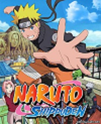
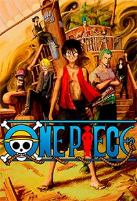
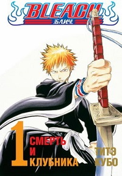
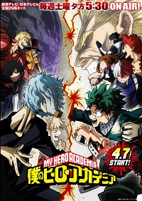

«Наруто» — манга Масаси Кисимото в жанре сёнэн. Главным её героем является Наруто Удзумаки, шумный и непоседливый ниндзя-подросток, который мечтает достичь всеобщего признания и стать Хокагэ — главой своего селения и сильнейшим ниндзя. Чтобы добиться уважения окружающих, ему предстоит пройти через тысячи препятствий: экзамены ниндзя, различные миссии и сражения.

One Piece «Большой куш» — манга Эйитиро Оды в жанре сёнэн и её аниме-экранизация. Первый выпуск манги вышел 19 июля 1997 года в журнале Weekly Shonen Jump. One Piece повествует о приключениях команды пиратов под названием «Пираты Соломенной шляпы» во главе с капитаном Манки Д. Луффи, в детстве съевшим Дьявольский плод Резина-Резина, давший ему способность растягиваться, словно резина.

«Блич» — манга Тайто Кубо и её аниме-экранизация. Манга начала публиковаться с августа 2001 года в японском журнале Shonen Jump. В настоящее время манга закончена, и насчитывает в общей сложности 74 тома. В 2005 году «Блич» была награждена премией издательства Shogakukan как лучшая манга в категории «сёнэн», она находится в списке комиксов-бестселлеров в Японии и США.

Boku no Hero Academia — манга, написанная и иллюстрированная Кохэем Хорикоси и публикующаяся в Weekly Shonen Jump. Первая глава манги вышла 7 июля 2014 года в 32-м выпуске журнала. Серия была лицензирована для выпуска на английском языке Viz Media и начала выходить в их еженедельном цифровом журнале Weekly Shonen Jump 9 февраля 2015 года История рассказывает о Идзуку Мидория, мальчика родившегося без сверхспособностей в мире, где они стали обычным явлением, но все же он мечтает стать героем.